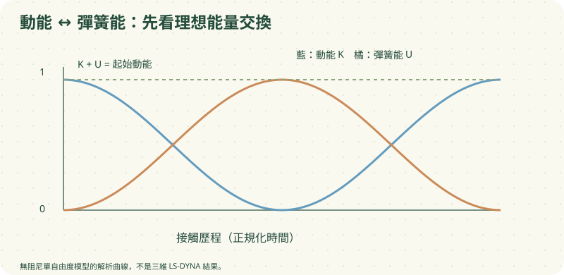

顯式動力分析
從時間、慣性與接觸出發，完成彈性方塊碰撞，再檢查能量與時間步。
2024 R23 篇筆記
操作環境：Workbench → LS-DYNA
先理解觀念 → 跟做案例 → 檢查與排錯。操作內容為文件查證，尚待實機驗證；圖解與互動為解析或概念示意。
先玩再懂 / ANALYTIC PLAYGROUND
解析／概念碰撞時，能量跑去哪裡？

動能 K—J
彈簧能 U—J
K + U—J
無阻尼、無摩擦的單自由度質量＋壓縮彈簧解析模型。k = 10000 N/m、接觸前間隙 20 mm；與三維方塊案例的材料和尺寸分開。播放經慢放，不是 LS-DYNA 結果。 查看依據 ↗